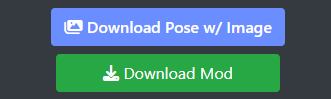
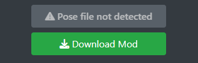
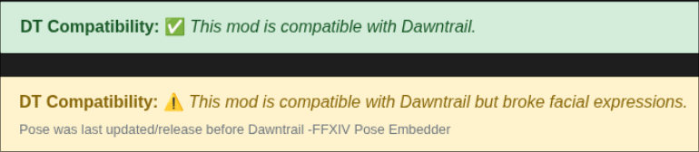

⚠️ Experimental / Work In Progress
Look, this thing is experimental. It's not perfect but it works darn well if you want to skip the manual upload and merge on this page. This is to make the process easier for people looking for poses. While this page still helps pose creators, the extension exist to help general gposer.
I am trying to gauge people's interest on this. So please join the discord and voice your opinion on this and give feedback!
 }}) Discord
Discord
What is this extension?
This browser extension lets you download .pose files straight off XIV Mod Archive with the preview image, author, tags, description, and last update date already embedded — no need to manually upload and merge them on this site. It's designed to save you a few clicks!
When you're on xivmodarchive.com and go to a pose page, it adds a blue button right above the site's normal "Download Mod" link. The original download still works exactly as before — this just adds a richer version above it. The label adapts to what the page offers:
Examples of the download buttons:
 |
 |
What does the extension do?
Warns you about old "Dawntrail-compatible" poses
Plenty of older poses are still tagged as Dawntrail-compatible on the site but were never updated after the patch broke facial expressions. On any pose page whose Last Version Update is before Dawntrail's release date (2024-07-02), the extension swaps the green "✅ compatible" badge for a yellow "⚠️" warning, so you know to expect issues before you download.
Before & after

- Tags are easier to search for in posing tools!
- Your poses remember where they came from. Every pose you download is automatically stamped with the preview image, the author's name, the tags, the page description (with a link back to the mod page), and the pose's last update date. Months later you'll still know which mod page each pose came from and what it's supposed to look like.
- Handles ZIP archives in one click. Many pose mods ship as a ZIP containing several poses. The extension opens the ZIP, updates every
.poseinside, and re-packages it under the original filename. Everything else in the archive — textures, READMEs, screenshots — is left completely untouched. - Finds the real archive when the main download is an external link. Some authors point "Download Mod" at Twitter/X, Patreon, etc. and put the actual
.zipin the "Other Files and Links" section. The extension scans that list and uses the first usable archive it finds. - Fixes pose files with a missing
.poseextension. Some authors package a pose without the.poseending. The extension recognizes pose files by their contents, adds the extension, and updates them so your posing tool (Anamnesis, Ktisis, etc.) sees them correctly. - Never overwrites info the author already filled in. If a pose already has an author, description, tags, version, or preview image set by hand, those are left exactly as written. It only fills in what's empty or missing.
- Cleans up preview images automatically. Black bars are cropped off and images are scaled to 720p so the resulting pose file doesn't balloon in size. GIFs pass through unchanged.
- Everything happens on your machine. Every step runs locally inside your browser tab. No files are uploaded anywhere, no telemetry, no third-party servers.
- Safety checks against malicious archives. Untrusted ZIPs are checked against size, structure, and path-traversal limits (including ZIP-bomb protection) before anything is touched. If something looks wrong it stops and shows an error.
- Works on Chromium & Firefox based browsers. (More testing is still needed on Firefox.)
How it works (The technical-ish bit)
The extension uses a script (content.js) that lives in your browser and checks on xivmodarchive.com. When you're looking at a mod page, it sticks the download button right there in the download section and changes the Dawntrail message section if it detects a pre-dawntrail pose.
Here's what it's doing when you click download:
- It finds the download link and checks whether it's a
.posefile or a.ziparchive. - It grabs the preview image, tags, author, description, and last update date from the mod page.
- It resizes the image down to 720p (and tries to crop out those annoying black bars) and stuffs it all into the
.pose— or into every.poseinside the ZIP. - Finally, it hands you the updated file directly. No need to visit this site at all if you're just grabbing stuff from the XIV Mod Archive.
It's basically a "one-click" version of what this site does for those who are downloading poses, specifically tailored for xivmodarchive (For now). It might still need some work, but it saves a lot of time.
That's cool! Is the extension in chrome/firefox extension stores?
No... I will get around to doing that if interest grows. Google wants payment for the extension upload while Firefox is free (Luckily!)
If you want to use this extension then you need to manually install it yourself for now.
The extension is free and open source! Feel free to have a look at the code on github!
{% include "container-footer.html" %}